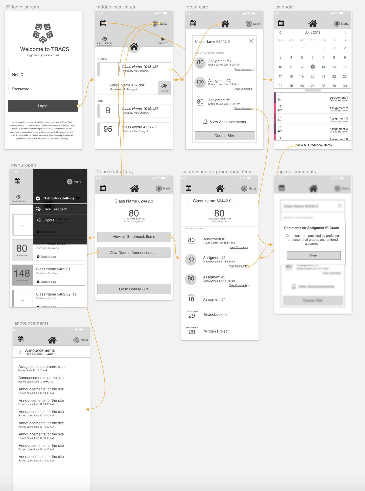

TRACS APP
iOS and Android application for the LMS at the university
Role
Lead UX/UI Designer. In charge of designing user experience and UI elements
Overview
TRACS is Texas State University's current Learning Management system for the student body. The TRACS app is the an app designed to fit the students needs on a device, while maintaining full system functionality.
The project was initiated based on user feedback from students, that had a need to see or do specific functions within the LMS on their devices. The new design lets students quickly learned their grades, which is one of the elements they wanted to be able to access.
Requirements gathering
Based on the user testing feedback we got from users, we gather that students had a need to access their current project grades more efficiently; as well as accessing certain other resources offered on the LMS. The team gathered the students feedback and combined with data we picked the top most used tools on the LMS and designed an app geared towards those tools, while still maintaining full system functionality.
Wireframes
The initial stages of design where done on paper wireframes where I showed the team and users how the app can function and the flow of the screens.

From the pencil sketches the developer started forming initial placeholder spaces in the app where functionality can be shown speeding the process for development and design. This style of collaboration is the best for faster delivering of a product, since the developer does not have to wait for final design to deliver functionality, and the designer can quickly switch ideas if they encounter any system restrictions.
Prototype- User Testing
Using a simple design click through prototype we gathered some user feedback utilizing a class, collaborating with a professor where we were able to see how students will interact with the app, running through a list of tasks and seeing if any issues arised.
From the initial user feedback we made changes and adjusted some of the interactions that were difficult for users, and added some functionality that students found missing.
Collaboration with Devs
For this project assets where delivered from a Sketch file sending a cloud link for visual reference and communicating with the developer for desired interactions and visual details. In my experience the manner of delivering assets varies as to how the team would like to collaborate and the different skills of a developer. This project was done on React platform so the developer felt more comfortable at making elements and then collaborating to adjust to match design.
Final Design-Last User Testing
Before deploying the app a final pass at user tested was conducted with a different set of users. A second round of testing is always helpful for final touches and gathering more feedback.
The final app is set to deploy in October 31st